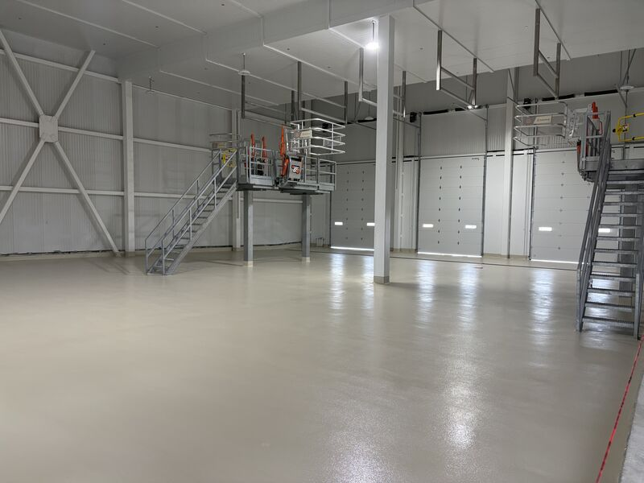
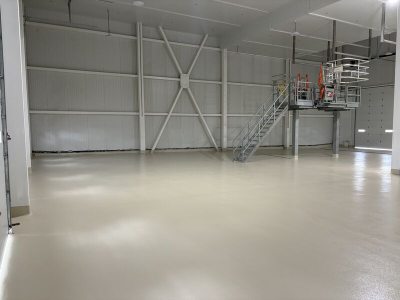
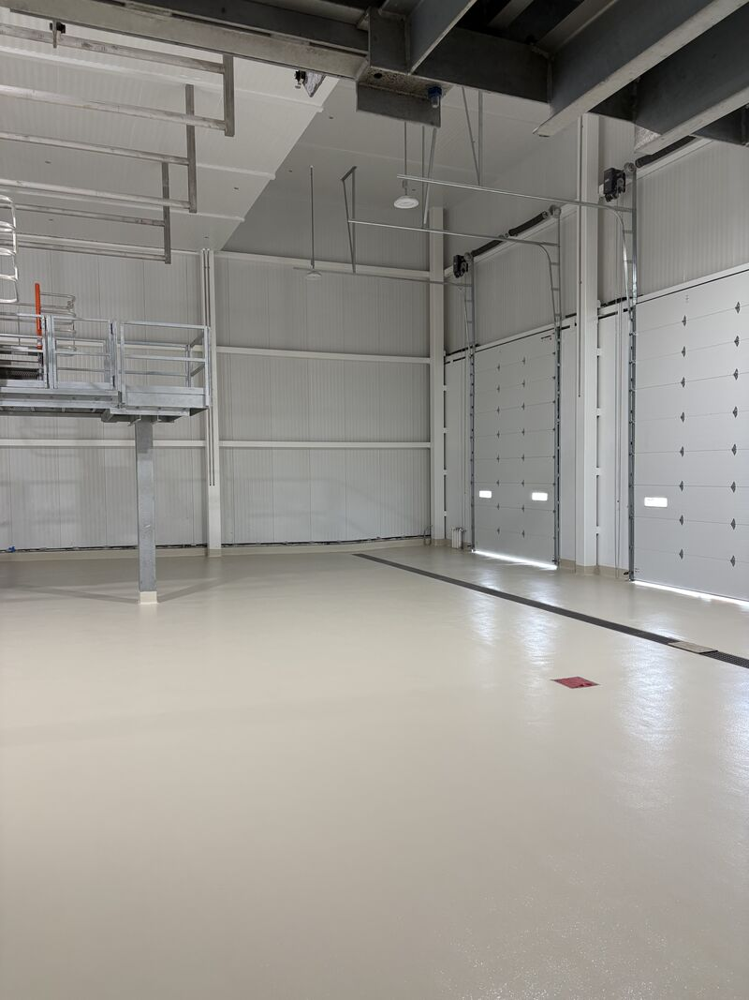
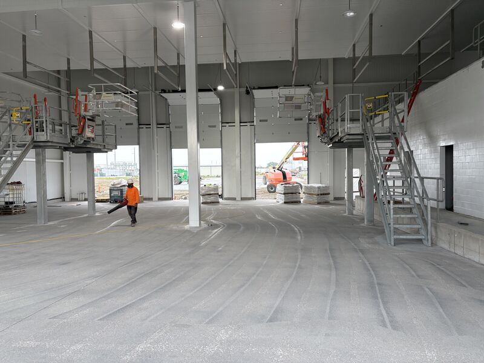

The spec called for an 8" tall cove base with a 2" radius. No trowel exists for that. A standard cove would have been the easy conversation, but it was not what the customer drew.

So we had the trowels made. People hear the SaniCrete difference and assume it is a tagline. It is not. Sometimes it is having tools built because a customer drew a detail outside the standard shape.
The Detail Was the Work
This was a new dairy build, and the first areas are down. The slab was shot blasted, then installed with SaniCrete STX, a 3/8" cementitious urethane with a topcoat. The cove was run exactly the way the spec called for it.
That matters in a dairy plant. Wall transitions get hit by washdown, moisture, traffic, cleaning tools, and sanitation expectations. A cove base is not decoration. It is part of making the room cleanable and keeping the floor-wall transition from becoming the weak point.



Standard Is Not Always the Spec
Most food plant floors still come down to basic discipline: prep the slab, install the right system, and finish the details cleanly. This one added a detail that did not fit the usual tool kit.
That is where experience helps. The right answer was not arguing the spec down to what was convenient. It was making sure the crew had the tool needed to build the radius correctly, then doing the work.
Building a Dairy Floor Detail?
If the plant, engineer, or owner has a detail that needs to be built as drawn, we can help plan the prep, material, tooling, and installation sequence before the first area is released.